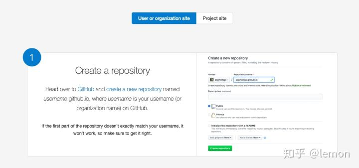
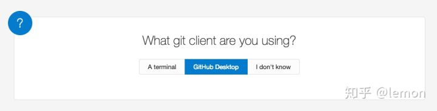
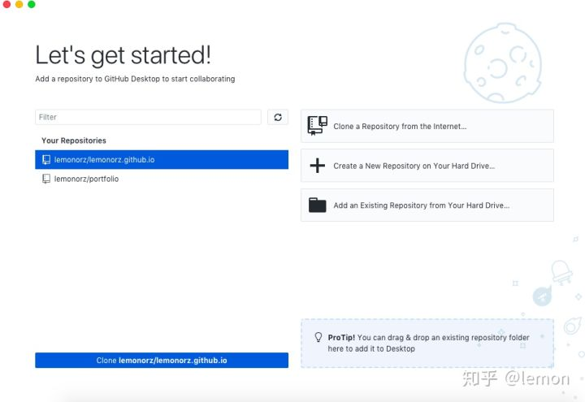
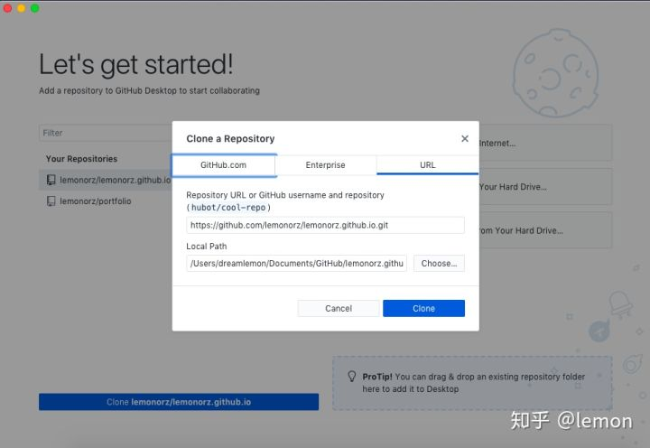
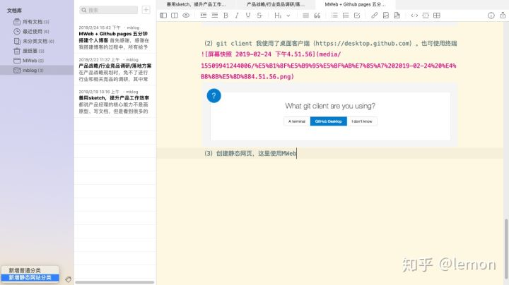
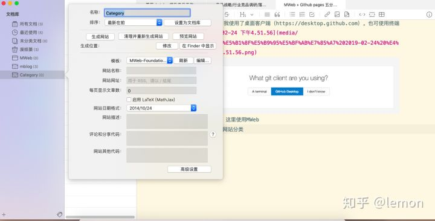
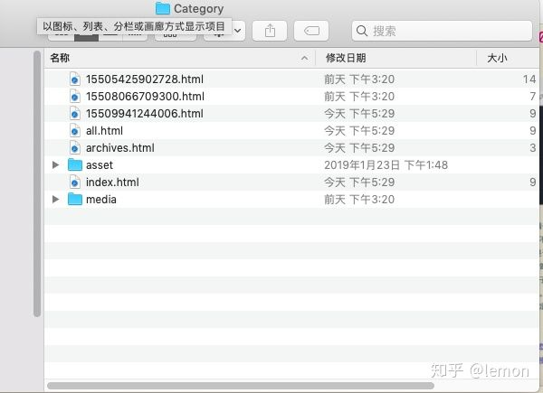
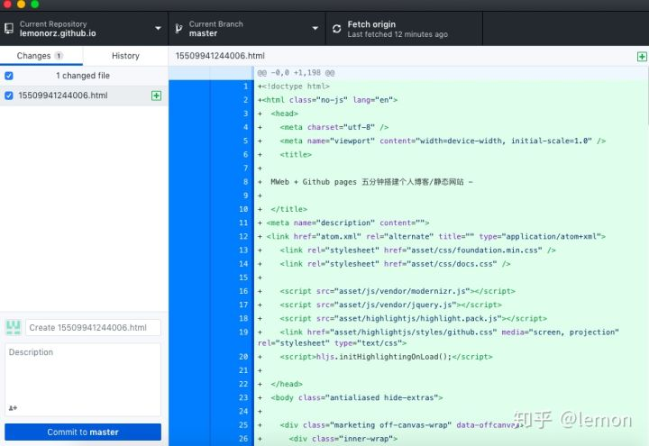
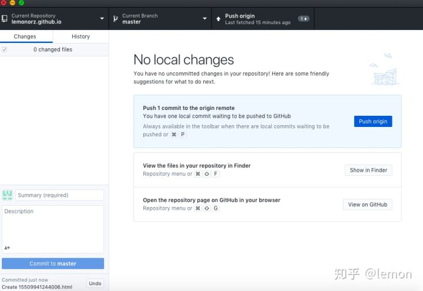

1、打开GitHub Pages
链接https://pages.github.com/ ，可以直接按照上面的操作指引来操作
(1)创建 github repository
官网说明如下图，需要先注册登录GitHub，然后创建repository，命名方式为http://username.github.io，注意用户名(前后两个输入框)保持一致。

（2）git client
我使用了桌面客户端（下载链接 https://desktop.github.com ）

（3）下载 GitHub desktop 并登录，选择你创建的repository，并点击clone按钮。然后就可以看到本地的克隆文件的路径。


2、下面先转到MWeb这里，下载并使用MWeb创建静态网页
MWeb是一个简单易用的markdown工具，还可以生成静态网站，不过要付费。
（1）首先左下角新增静态网站分类

（2）对这个站点的名称、模版等进行设置

（3）在里面写一篇文章，然后选择生成网站
(4)生成网站后，还是在这个下拉菜单中选择“在finder中显示网站生成位置”，就会定位到本地文稿所在位置。

(5)将这里的所有文件复制到 github在本地的克隆文件中
3、最后一步，文件上传与同步
打开GitHub desktop，左边栏中就是我们要同步的新增文件。点击左下的commit，然后点击右上角的push按钮。这样就OK了，你可以访问一下你的网站（http://username.github.io）看看效果了～

